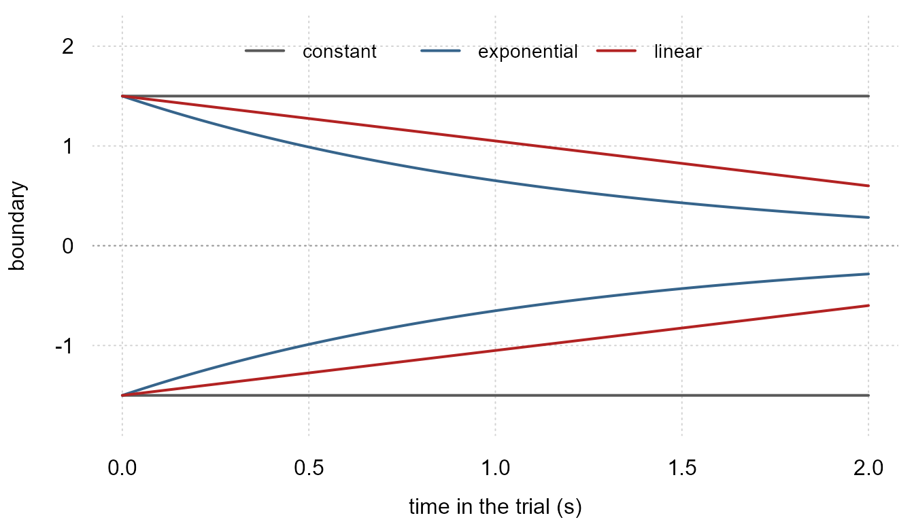

vignette("ddm") fits the drift-diffusion model whose
density is known in closed form. This one is about the models whose
density is not.
Some sections carry a figure. The figures use tinyplot, which is a suggested package, and they are skipped when it is not installed.
What the generalized model adds
The Wiener model of wiener() holds three things fixed.
Evidence accumulates at a constant rate, the two decision boundaries
stay where they are, and the accumulator has no memory of its own level.
Drop any of them and the first-passage density stops having a closed
form.
gddm() is the generalized drift-diffusion model of
Shinn, Lam and Murray (2020). The accumulator follows
dx = a(x, t) dt + dWfrom a starting distribution, and is absorbed at moving boundaries at
plus and minus B(t). The response time is the absorption
time plus a non-decision time. Three things are now yours to choose:
-
the drift
a(x, t), which may depend on a covariate and on the accumulator’s own level. A drift that pulls the accumulator back toward zero is leaky integration; one that pushes it away is unstable. -
the boundary
B(t), which may collapse over the course of a trial, so that a decision gets easier to reach the longer it takes. - the starting distribution, a point or an interval.
Each choice brings its own free parameters, and each of those takes a formula like any other distributional parameter.
The three boundaries the package ships differ only in how they close, and at the separation and time constant this vignette simulates from they close very differently. The linear one takes a collapse fraction of its own, set to 0.6 here.
tmax <- 2
tg <- seq(0, tmax, length.out = 201)
# fn(t, p, ctl) is the seam gddm_bound_term() defines, and the linear
# boundary reads t_max from the control to scale its collapse
bwall <- function(b, p) rep_len(b$fn(tg, p, list(t_max = tmax))$B, length(tg))
bnds <- list(constant = bwall(gddm_bound_constant(), list(bs = 3)),
exponential = bwall(gddm_bound_exponential(),
list(bs = 3, tau = 1.2)),
linear = bwall(gddm_bound_linear(), list(bs = 3, kappa = 0.6)))
bcol <- c("gray35", "steelblue4", "firebrick")
tinyplot::tinyplot(x = tg, y = bnds[[1]], type = "n", theme = "clean2",
ylim = c(-1.75, 2.15), xlab = "time in the trial (s)",
ylab = "boundary")
for (i in seq_along(bnds)) {
lines(tg, bnds[[i]], col = bcol[i], lwd = 2)
lines(tg, -bnds[[i]], col = bcol[i], lwd = 2)
}
abline(h = 0, lty = 3, col = "gray60")
legend("top", names(bnds), col = bcol, lty = 1, lwd = 2, bty = "n",
horiz = TRUE, cex = 0.9)
All three open at the same width. By the end of the trial the exponential pair has closed to about a fifth of it, so a slow decision needs a fifth of the evidence a fast one did, and what the accumulator runs between is a moving corridor rather than a fixed one.
Two responses is the whole of it. One accumulator in one dimension between two absorbing boundaries can end a trial at the upper wall or the lower wall and nowhere else, so multi-alternative choice is a different architecture rather than another parameter, and a third level in the decision indicator is refused rather than folded into one of the two.
An experiment
The design is the one the paper fits: a motion discrimination task at several coherences, where the drift grows with coherence and the boundaries collapse as the trial runs on.
gddm_simulate() draws from the model’s own density
rather than from a forward simulation of the diffusion, whose first
passages arrive late by however much the step misses excursions between
monitoring times.
coh <- c(0, 0.128, 0.512)
ctl <- gddm_control(t_max = 2, dt = 0.02, ny = 101)
dat <- do.call(rbind, lapply(coh, function(cc) {
gddm_simulate(300, mu = 6, alpha = 0.8, leak = 1, bs = 3, tau = 1.2,
ndt = 0.25, coh = cc,
drift = list(gddm_drift_coherence(cmax = 0.512),
gddm_drift_leak()),
bound = gddm_bound_exponential(), control = ctl)
}))
dat$coh <- rep(coh, each = 300)
str(dat)
#> 'data.frame': 900 obs. of 4 variables:
#> $ rt : num 1.281 1.045 1.486 0.566 0.944 ...
#> $ upper: int 0 0 1 0 0 0 1 1 1 1 ...
#> $ cond : int 1 1 1 1 1 1 1 1 1 1 ...
#> $ coh : num 0 0 0 0 0 0 0 0 0 0 ...Accuracy rises with coherence, and responses get faster:
data.frame(coh = coh,
accuracy = round(tapply(dat$upper, dat$coh, mean), 3),
mean_rt = round(tapply(dat$rt, dat$coh, mean), 3))
#> coh accuracy mean_rt
#> 0 0.000 0.50 1.101
#> 0.128 0.128 0.98 0.807
#> 0.512 0.512 1.00 0.482What the data must carry
Two things beyond the response time, and both are data.
Which boundary a trial ended at reaches the family through
dec(), as it does for wiener(), or through
vint(), which is the general-purpose route and the one used
below. The condition a trial belongs to reaches it
through vint(), and that one is particular to this family:
one solve of the Fokker-Planck equation serves every trial that shares a
parameter vector, and the family finds those trials through an index it
is given rather than by comparing parameter values, which it cannot do
on a tape.
vint() numbers its values positionally, so the two
spellings put the condition in different places, and the family reads
whichever it is:
rt | dec(response) + vint(cond) # boundary in dec(), condition first
rt | vint(upper, cond) # boundary first, condition secondgddm_conditions() builds the index. Name every variable
that appears on the right-hand side of any formula in the model, and
every covariate a drift term reads.
dat$cond <- gddm_conditions(dat, coh)
table(dat$cond)
#>
#> 1 2 3
#> 300 300 300Naming more variables than you need is safe and only costs solves. Naming fewer is wrong, and wrong in a way nothing downstream can detect: the family checks that the covariates a drift reads are constant within a condition, but it cannot check the rest.
Fitting
fit <- frm(bf(rt | vint(upper, cond) + vreal(coh) ~ 1, bias = 0.5),
family = gddm(drift = list(gddm_drift_coherence(cmax = 0.512),
gddm_drift_leak()),
bound = gddm_bound_exponential(),
control = ctl),
data = dat)
summary(fit)
#> Family: gddm
#> Formula: rt | vint(upper, cond) + vreal(coh) ~ 1
#> Method: ML nobs: 900
#> logLik: 46.4345 AIC: -80.869 BIC: -52.0547
#>
#> Coefficients (mu):
#> Estimate Std. Error z value Pr(>|z|)
#> (Intercept) 5.68217 0.23468 24.213 < 2.2e-16
#>
#> Coefficients (alpha):
#> Estimate Std. Error z value Pr(>|z|)
#> (Intercept) -0.241312 0.045766 -5.2727 1.344e-07
#>
#> Coefficients (leak):
#> Estimate Std. Error z value Pr(>|z|)
#> (Intercept) 0.73064 0.64611 1.1308 0.2581
#>
#> Coefficients (bs):
#> Estimate Std. Error z value Pr(>|z|)
#> (Intercept) 1.12107 0.14576 7.6912 1.457e-14
#>
#> Coefficients (tau):
#> Estimate Std. Error z value Pr(>|z|)
#> (Intercept) 0.22077 0.09642 2.2897 0.02204
#>
#> Coefficients (ndt):
#> Estimate Std. Error z value Pr(>|z|)
#> (Intercept) 1.03885 0.35519 2.9248 0.003447
#>
#> Fixed dpar: bias = 0.5The estimates come back on the link scale, so put them back:
e <- unlist(fixef(fit))
data.frame(
truth = c(mu = 6, alpha = 0.8, leak = 1, bs = 3, tau = 1.2, ndt = 0.25),
estimate = round(c(
mu = unname(e[["mu.(Intercept)"]]),
alpha = exp(unname(e[["alpha.(Intercept)"]])),
leak = unname(e[["leak.(Intercept)"]]),
bs = exp(unname(e[["bs.(Intercept)"]])),
tau = exp(unname(e[["tau.(Intercept)"]])),
ndt = min(dat$rt) / (1 + exp(-unname(e[["ndt.(Intercept)"]])))), 3))
#> truth estimate
#> mu 6.00 5.682
#> alpha 0.80 0.786
#> leak 1.00 0.731
#> bs 3.00 3.068
#> tau 1.20 1.247
#> ndt 0.25 0.241bs is the separation between the boundaries, not the
distance from the start to one of them, so it means what it means in
wiener() and the two families’ estimates are directly
comparable.
leak is positive for leaky integration and negative for
unstable integration. It is the paper’s l, which is the
negative of PyDDM’s leak.
The table of estimates is one reading of the fit. The other is the fitted distribution against the data it was fitted to, as defective cumulative distributions: one curve per wall, each leveling off at the proportion of trials that ended there.
# The solved density is not part of this package's API. These two are
# the internals its own solver tests read, and a picture of the fit
# needs the density on a grid, which nothing exported returns.
gd_solve <- frmtmb.ddm:::gd_solve
gd_shift <- frmtmb.ddm:::gd_shift
comp <- gddm(drift = list(gddm_drift_coherence(cmax = 0.512),
gddm_drift_leak()),
bound = gddm_bound_exponential())[["gddm"]]$comp
est <- list(mu = unname(e[["mu.(Intercept)"]]),
alpha = exp(unname(e[["alpha.(Intercept)"]])),
leak = unname(e[["leak.(Intercept)"]]),
bs = exp(unname(e[["bs.(Intercept)"]])),
tau = exp(unname(e[["tau.(Intercept)"]])), bias = 0.5,
ndt = min(dat$rt) / (1 + exp(-unname(e[["ndt.(Intercept)"]]))))
# one solve per condition, shifted by the non-decision time and
# renormalized exactly as the likelihood does it
gd_curve <- function(cov, dt = ctl$dt) {
g <- list(dt = dt, ny = ctl$ny, t_max = ctl$t_max,
nt = as.integer(round(ctl$t_max / dt)), tridiagonal = "recorded",
wmax = as.integer(ceiling(est$ndt / dt)) + 2L)
s <- gd_solve(est, cov, comp, g)
u <- gd_shift(s$up, est$ndt, dt, g$wmax)
l <- gd_shift(s$lo, est$ndt, dt, g$wmax)
m <- (sum(u) + sum(l)) * dt
data.frame(t = seq(0, ctl$t_max, by = dt), dt = dt,
up = as.numeric(u) / m, lo = as.numeric(l) / m)
}
cv <- lapply(coh, gd_curve)
op <- par(mfrow = c(1, 3))
for (i in seq_along(coh)) {
d <- dat[dat$coh == coh[i], ]
g <- cv[[i]]
# the panel is named with the variable rather than the word: the
# theme's title is too large for a third of the width to hold
# "coherence 0.512" without running off the last panel
tinyplot::tinyplot(x = g$t, y = cumsum(g$up) * g$dt, type = "n",
theme = "clean2", xlim = c(0.2, 1.6), ylim = c(0, 1),
main = paste("coh", coh[i]),
xlab = "response time (s)",
ylab = "cumulative proportion")
for (w in c(1, 0)) {
cl <- if (w == 1) "steelblue4" else "firebrick"
rt <- sort(d$rt[d$upper == w])
lines(c(0.2, rt), c(0, seq_along(rt)) / nrow(d), type = "s", lty = 3,
col = cl, lwd = 1.6)
lines(g$t, cumsum(if (w == 1) g$up else g$lo) * g$dt, col = cl, lwd = 2)
}
if (i == 1) {
legend("topleft", c("upper wall", "lower wall", "observed", "fitted"),
col = c("steelblue4", "firebrick", "gray40", "gray40"),
lty = c(1, 1, 3, 1), lwd = 2, bty = "n", cex = 0.95)
}
}![Three panels side by side, one per coherence, of cumulative proportion from 0 to 1 against response time from 0.2 to 1.6 seconds. Each panel holds four curves: dotted steps for the observed data and solid lines for the fit, blue for the upper wall and red for the lower. At coherence 0 the blue and red curves rise together and level off near 0.5 each. At coherence 0.128 the blue curve climbs to nearly 1 while the red stays flat near 0.02. At coherence 0.512 the blue curve rises earlier and more steeply and reaches 1 by about 0.7 seconds. Each solid curve lies on its own dotted steps.](gddm_files/figure-html/fig-fit-1.png)
par(op)The height a curve settles at is the choice proportion and its rise is the response times. The lower wall’s plateau falls from about a half at zero coherence to near zero at 0.512, and every fitted curve lies on its own observed steps.
The numerical scheme, and why it is this one
There is no density to evaluate, so every likelihood evaluation solves the Fokker-Planck equation forward in time and reads the probability flux through each boundary. Three things about how.
The boundaries are pinned, not chased. Substituting
y = x / B(t) puts the walls at plus and minus one for all
t. The spatial grid is then fixed while the boundary
collapses, and no grid index depends on a parameter. This is what makes
the model differentiable at all: the usual treatment sandwiches a moving
bound between two integer grid indices, so the objective depends on
where the bound falls between nodes, which is why the reference
implementation fits by differential evolution and takes no
derivatives.
The scheme is Crank-Nicolson. Once the walls are stationary it is available, and it is second order in the step and unconditionally stable. It is not available to a solver that chases the bound in the original coordinate: the discretized operator is stiff and its eigenvalues grow as the boundary collapses, so an explicit method would need a step orders of magnitude smaller.
The defective density is renormalized. The
discretized solve loses a little probability mass, and how much it loses
depends on the parameters, because a configuration that absorbs faster
loses less. A likelihood that does not divide the loss out therefore
pays a hidden bonus for absorbing quickly, and the bonus lands squarely
on the leak and the boundary height. This is not a small effect: turning
it off moves the leak by more than a factor of two on data simulated
from the model itself. gddm_control(renormalize = FALSE)
exists so the size of that bias can be measured, not because it is ever
the better model.
Renormalizing also makes the density explicitly conditional on a
response inside the modeled window, which is why t_max has
to contain every response time and is worth setting to the experiment’s
deadline when there is one.
How accurate, and how expensive
With a constant drift and boundaries that do not move, the generalized model is the Wiener model, so the solver can be checked against the closed form. At the shipped grid, over decision times from 0.2 s on and across a range of drifts, separations and starting points, the two agree to better than 0.01 in the log density. A coarser grid is worse and a finer one is better; the package’s own test suite pins all three.
ddm_lpdf_both <- frmtmb.ddm:::ddm_lpdf_both
wcomp <- gddm()[["gddm"]]$comp
wp <- list(mu = 2, bs = 2, bias = 0.5, ndt = 0)
# no shift and no renormalization: the raw flux is what the closed form
# is a statement about, and it is what the solver tests compare
gd_raw <- function(dt, ny) {
g <- list(dt = dt, ny = as.integer(ny), t_max = 2,
nt = as.integer(round(2 / dt)), tridiagonal = "recorded")
s <- gd_solve(wp, 0, wcomp, g)
k <- 2:(round(1.5 / dt) + 1)
tt <- seq(0, 2, by = dt)[k]
data.frame(t = tt, up = pmax(as.numeric(s$up)[k], 1e-300),
lo = pmax(as.numeric(s$lo)[k], 1e-300),
eup = exp(ddm_lpdf_both(tt, 2, 2, 0.5, 1)),
elo = exp(ddm_lpdf_both(tt, 2, 2, 0.5, 0)))
}
fine <- gd_raw(0.01, 201L)
crs <- gd_raw(0.02, 101L)
gd_err <- function(d) pmax(abs(log(d$up) - log(pmax(d$eup, 1e-300))),
abs(log(d$lo) - log(pmax(d$elo, 1e-300))))
sname <- c("closed form, upper", "closed form, lower", "solver, upper",
"solver, lower")
scol <- c("gray70", "gray70", "steelblue4", "firebrick")
dens <- data.frame(t = rep(fine$t, 4),
d = c(fine$eup, fine$elo, fine$up, fine$lo),
s = factor(rep(sname, each = nrow(fine)), levels = sname))
err <- data.frame(t = c(fine$t, crs$t), e = c(gd_err(fine), gd_err(crs)),
g = factor(rep(c("dt 0.01, ny 201", "dt 0.02, ny 101"),
c(nrow(fine), nrow(crs)))))
op <- par(mfrow = c(1, 2))
tinyplot::tinyplot(d ~ t | s, data = dens, type = "l", log = "xy",
theme = "clean2", col = scol, lwd = c(4, 4, 1.6, 1.6),
lty = c(1, 3, 1, 1), legend = FALSE, ylim = c(1e-12, 5),
main = "density, both walls",
xlab = "decision time (s)", ylab = "density")
legend("bottomright", sname, col = scol, lwd = c(4, 4, 1.6, 1.6),
lty = c(1, 3, 1, 1), bty = "n", cex = 0.7)
tinyplot::tinyplot(e ~ t | g, data = err, type = "l", log = "xy",
theme = "clean2", col = c("steelblue4", "darkorange3"),
lwd = 2, legend = FALSE, main = "log-density error",
xlab = "decision time (s)", ylab = "absolute error")
abline(v = 0.2, lty = 2, col = "gray40")
abline(h = 0.01, lty = 2, col = "gray40")
legend("topright", levels(err$g), col = c("steelblue4", "darkorange3"),
lwd = 2, lty = 1, bty = "n", cex = 0.7)![Two panels against decision time on a logarithmic axis from 0.01 to 1.5 seconds. The left panel plots density on a logarithmic axis from 1e-12 to 5. Thick gray curves are the closed-form Wiener density, solid for the upper wall and dashed for the lower, and thin blue and red curves are the solver at the same two walls. Above about 0.05 seconds each thin curve lies on its gray curve. Below that the gray curves plunge off the bottom of the panel while the thin curves carry on almost straight, so the solver is far too large there. The right panel plots the absolute log-density error for two grids, blue for dt 0.01 with ny 201 and orange for dt 0.02 with ny 101. Both fall from above 10 at the shortest times and cross the dashed line at 0.01 before the dashed vertical line at 0.2 seconds, and the orange curve stays above the blue one throughout.](gddm_files/figure-html/fig-accuracy-1.png)
par(op)Drawn at one drift and one separation, the solved density and the closed form are the same curve on both walls above about a twentieth of a second. Read as an error rather than as two curves, that same comparison is where the grid shows: past 0.2 s the coarser grid is about four times worse than the shipped one, and both stay well inside 0.01.
Two honest limits. The density at very short decision times, a few
steps above zero, is much larger than the truth: an implicit scheme
spreads a little mass everywhere immediately, where the true
first-passage density is exponentially small. On a logarithmic density
axis the closed form falls away to nothing at the left edge while the
solver’s own curves carry on almost straight. It is small in absolute
terms, and adding a lapse component floors it, but a fit should not be
asked to read it. And refining ny alone helps only because
the starting mass is deliberately spread over two grid cells rather than
one; a sharper start would ring, because Crank-Nicolson does not damp
the highest frequencies a grid carries.
The cost scales with the number of conditions, not
the number of trials, because one solve serves a whole condition. It
also scales with t_max / dt. Both the tape build and the
evaluation grow with them, and gddm_control(tridiagonal =)
trades one against the other: the default records the solve into the
tape, which is slow to build and fast to run, while
"atomic" collapses it into a single node with a
hand-written derivative, which is quick to build and slower to run. The
default suits a fit, which evaluates the objective many times.
When a row falls off the grid
The density is floored before it is logged. Where the solved density
at a trial’s own response time underflows, the log density is a large
finite negative number rather than NaN. That matters twice:
NaN is not a value a line search can use, and inside
mixture() one NaN takes every other component
with it through the log-sum-exp. The floored row is flat, so its
gradient is exactly zero, which is what makes it harmless rather than
merely quiet.
Being quiet is the cost, so the count is available to read:
gddm_floored(fit)
#> [1] 0
#> attr(,"rows")
#> integer(0)
#> attr(,"n_obs")
#> [1] 900Zero means the grid represented every observation. A few rows means a
few trials sit within a few time steps of the fitted non-decision time,
where a fixed grid cannot resolve a density that is climbing through
orders of magnitude, and those rows contributed a constant rather than
information. Many rows means the fit is not to be trusted: shrink
dt, or give the model a lapse component, which floors the
density in the model rather than in the arithmetic.
The floor is reached where the solved density underflows, and that is the leading edge, just past the fitted non-decision time. The step decides what happens there, on the model fitted above.
gv <- do.call(rbind, lapply(c(0.04, 0.02, 0.01),
function(d) gd_curve(0.512, dt = d)))
gv <- gv[gv$t > 0.2 & gv$t < 0.62, ]
gv$step <- factor(paste("dt", gv$dt))
gcol <- c("steelblue4", "darkorange3", "firebrick")
tinyplot::tinyplot(pmax(up, 1e-14) ~ t | step, data = gv, type = "l",
log = "y", theme = "clean2", lwd = 2, legend = FALSE,
col = gcol, ylim = c(1e-13, 20),
xlab = "response time (s)", ylab = "density",
main = "upper wall at coherence 0.512")
abline(v = est$ndt, lty = 2, col = "gray40")
legend("bottomright", levels(gv$step), col = gcol, lwd = 2, lty = 1,
bty = "n", cex = 0.85)
The three grids agree from about 0.4 s on. Below that they do not: at
0.28 s the coarsest is two orders of magnitude above the finest. It is
those few nodes at the leading edge, not the bulk, that a smaller
dt buys.
When not to use this
Use wiener() whenever it applies. That is whenever the
drift is constant in the state and in time and the boundaries do not
move: there the first-passage density is a known pair of series and
costs arithmetic, while here every evaluation solves a partial
differential equation once per condition. The difference is orders of
magnitude.
What gddm() buys is the class of models the closed form
cannot express at all. If the scientific question is whether the
boundaries collapse, or whether integration is leaky, there is no
analytic alternative to compare against.
Writing your own component
The catalogue is meant to be extended. A drift term is the value of
gddm_drift_term(), a boundary is
gddm_bound_term() and a starting distribution is
gddm_start_term(). Each carries its own free parameters,
each of which then takes a formula like any other.
A boundary that decays toward a floor rather than toward zero, say:
bound_floor <- function() {
gddm_bound_term(
"floored",
dpars = list(
bs = list(link = "log", init = function(y, aterms) 1.5),
tau = list(link = "log", init = function(y, aterms) max(y)),
floor = list(link = "logit", init = function(y, aterms) 0.3)),
fn = function(t, p, ctl) {
f <- p$floor + (1 - p$floor) * exp(-t / p$tau)
list(B = 0.5 * p$bs * f,
dlogB = -((1 - p$floor) / p$tau) * exp(-t / p$tau) / f)
})
}
gddm(bound = bound_floor())[["dpars"]]
#> [1] "mu" "bs" "tau" "floor" "bias" "ndt"Two rules. Nothing in a component may compare a parameter against anything, because a tape records no comparisons. And a boundary returns its logarithmic derivative alongside its value, because the change of variable that pins the walls needs it and differencing the boundary would cost the scheme its accuracy.